00:02如今，机器学习正在创造巨大的经济价值。
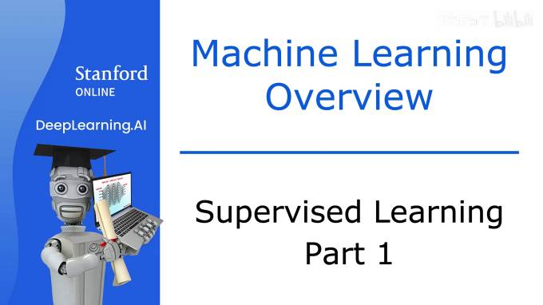
00:07我认为当今机器学习所创造的百分之九十九的经济价值，都来自一种被称为监督学习的机器学习类型。
00:17让我们来看看这意味着什么。
00:20监督式机器学习，或者更常见的叫法，监督学习，指的是学习从 X 到 Y，即从输入到输出映射的算法。
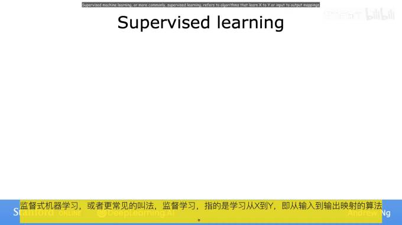
00:33监督学习的关键特征是，你给学习算法提供带有正确答案的示例来学习，这里的正确答案，指的是针对给定输入 X 的正确标签 Y。
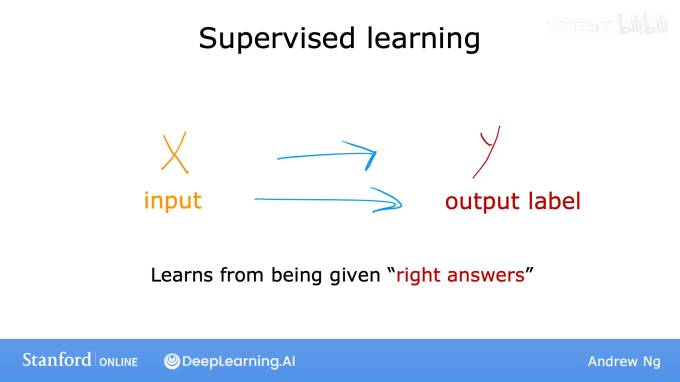
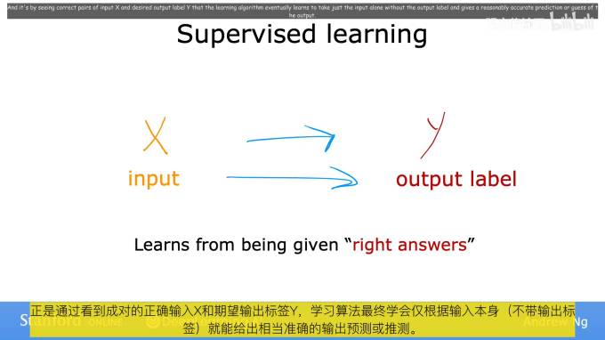
01:06正是通过看到成对的正确输入 X 和期望输出标签 Y，学习算法最终学会仅根据输入本身（不带输出标签）就能给出相当准确的输出预测或推测。
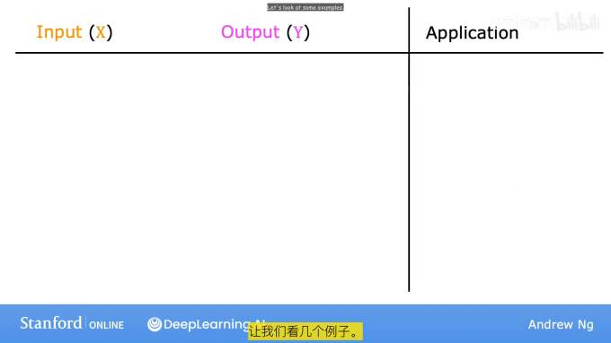
01:11如果输入 X 是一封邮件，输出 Y 是这封邮件是垃圾邮件还是非垃圾邮件？
01:19这就构成了你的垃圾邮件过滤器。
01:22或者，如果输入是一段音频片段，算法任务是输出文本记录，那么这就是语音识别。
01:35或者，如果你想输入英语，并让它输出相应的西班牙语、阿拉伯语、印地语、中文、日语或其他语言的翻译，那么这就是机器翻译。
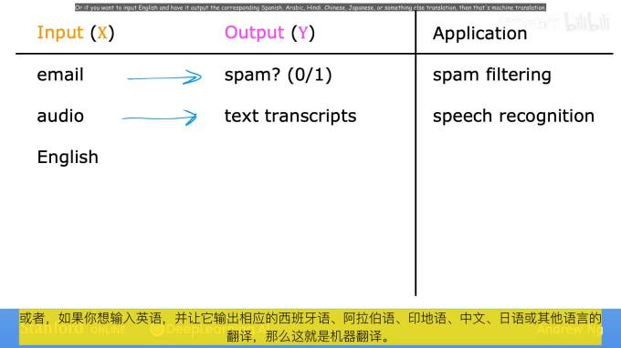
01:48而当今最赚钱的监督学习形式，可能应用在在线广告领域。
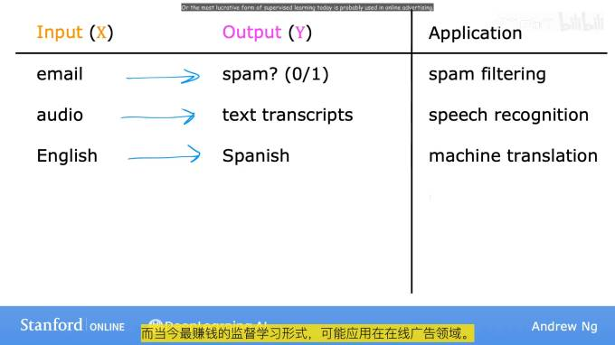
01:56几乎所有大型在线广告平台都有一个学习算法，它会输入关于某条广告的一些信息以及关于你的一些信息，然后尝试判断你是否会点击那条广告。
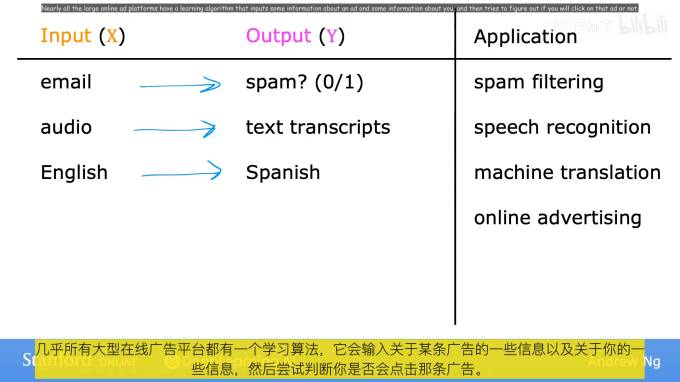
02:10因为通过向你展示你稍有可能点击的广告，对这些大型在线广告平台来说，每一次点击都意味着收益。
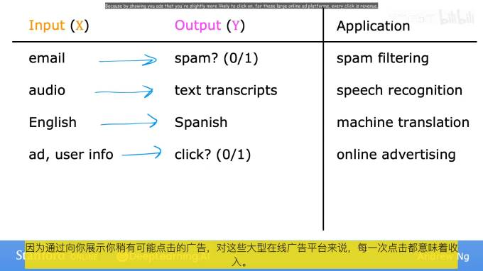
02:19这实际上为这些公司带来了大量收入。
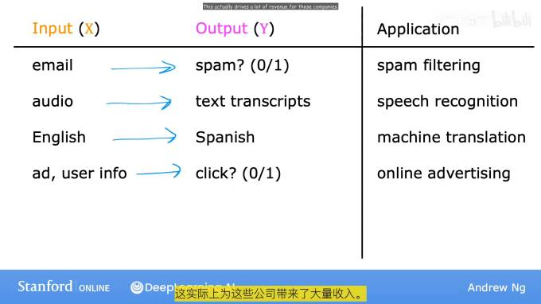
02:23这是一个很多人投入大量工作的领域，也许不是最鼓舞人心的应用，但它确实对当今一些公司产生了显著的经济影响。
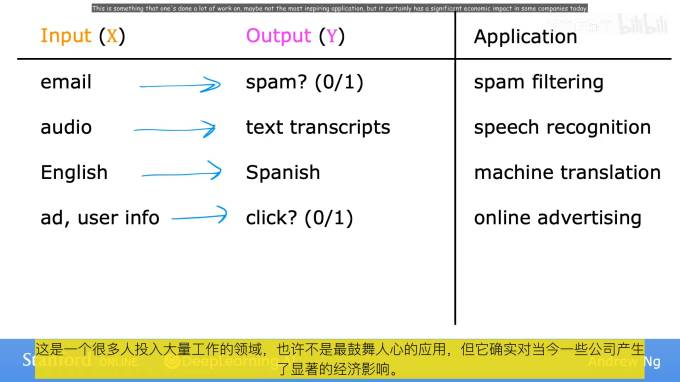
02:35或者，如果你想制造一辆自动驾驶汽车，学习算法会将图像以及来自其他传感器（如雷达或其他设备）的一些信息作为输入，然后尝试输出，例如其他车辆的位置，以便你的自动驾驶汽车能够安全地在其他车辆周围行驶。
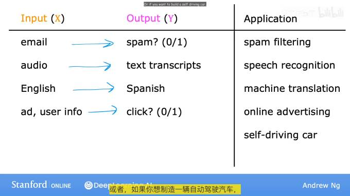
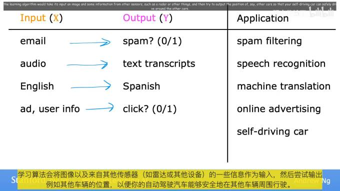
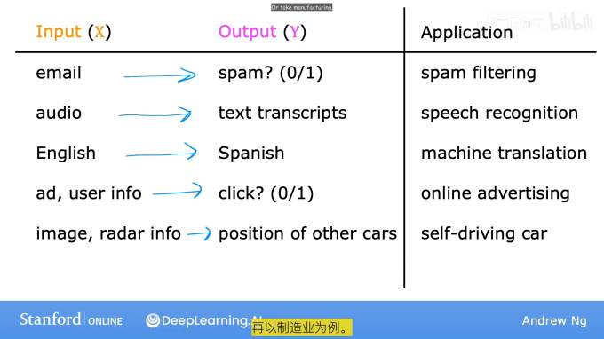
03:01我实际上在公司对这个领域做了很多工作。
03:07你可以让学习算法将一张刚下生产线的制造产品（比如一部手机）的图片作为输入，然后让学习算法输出该产品是否存在划痕、凹痕或其他缺陷。
03:25这被称为视觉检测，它正在帮助制造商减少或防止其产品出现缺陷。
03:32在所有这些应用中，你首先需要使用输入 X 和正确答案（即标签 Y）的示例来训练你的模型。
03:42在模型从这些输入输出或 X 和 Y 的配对中学习之后，它就能接收一个全新的、从未见过的输入 X，并尝试生成相应的适当输出 Y。
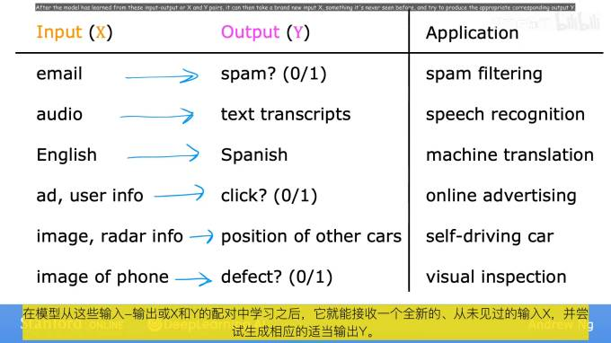
03:57让我们更深入地探讨一个具体的例子。
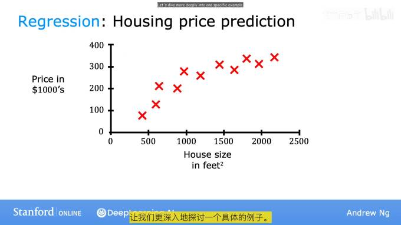
04:02假设你想根据房屋的面积来预测房价。
04:06你已经收集了一些数据，假设你将数据绘制成图，看起来像这样。
04:13这里横轴是房屋的面积，单位是平方英尺。
04:19是的，我住在美国，我们这里仍然使用平方英尺。
04:23我知道世界上大多数地区使用平方米。
04:28这里纵轴是房屋的价格，单位是千美元。
04:34那么，有了这些数据，假设有位朋友想知道他那栋七百五十平方英尺的房子的价格是多少。
04:42我们怎么能帮助你呢？
04:45学习算法能做的一件事是，对数据拟合一条直线。
04:51根据这条直线来看，你朋友的房子售价大概在，我不确定，也许十五万美元左右。
05:00但拟合一条直线并不是你唯一能使用的学习算法。
05:05还有其他算法可能对这个应用更有效。
05:09例如，与其拟合一条直线，你可能会决定拟合一条曲线，一种比直线稍微更复杂的函数。
05:21如果你这样做，并在这里进行预测，那么看起来，嗯，你朋友的房子售价可能接近二十万美元。
05:31在本课程后面你会学到的一件事是，如何决定是针对数据拟合一条直线、一条曲线，还是其他更复杂的函数。
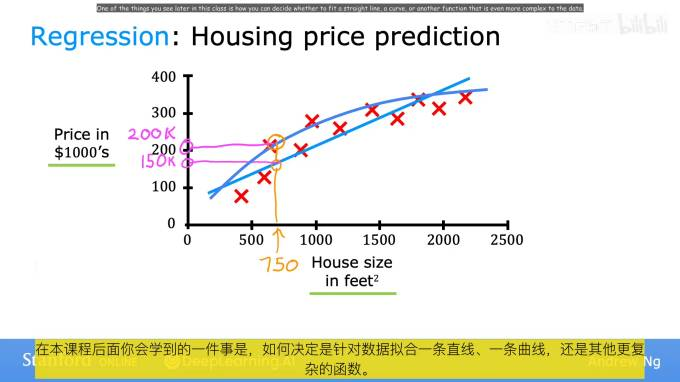
05:43现在，挑一个能给你朋友带来最高售价的选项似乎并不合适，但你会学到的是，如何让算法系统地选择最合适的直线、曲线或其他方式来拟合这些数据。
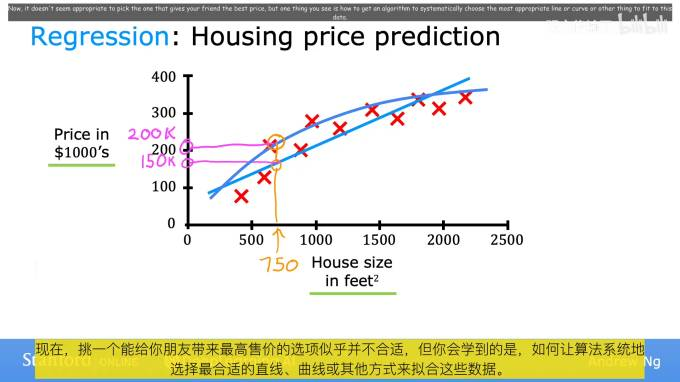
06:00你在这张幻灯片上看到的是一个监督学习的例子。
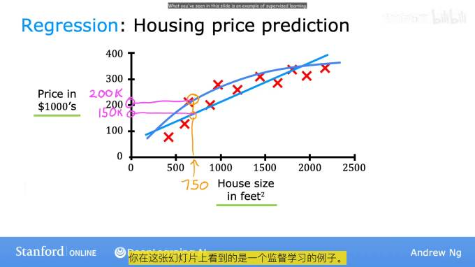
06:04因为我们提供给算法的数据集中，每一个房子都给出了所谓的正确答案，也就是标签或正确的价格。
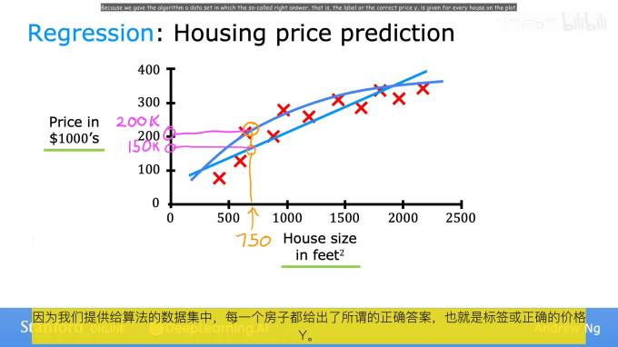
06:15而学习算法的任务是产生更多这样的正确答案，具体来说就是预测像你朋友房子那样的其他房子可能的价格。
06:27这就是为什么这叫监督学习。
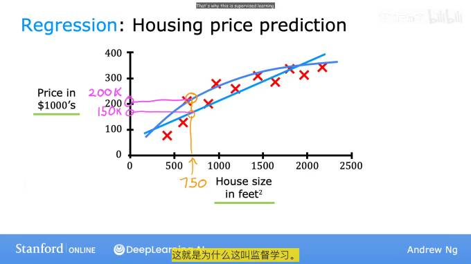
06:30为了再定义一些术语，这个房价预测是一种特定类型的监督学习，称为回归。
06:38所谓回归，是指我们试图从无限多个可能的数值中预测出一个数值，比如我们例子中的房价，可能是十五万美元、七万美元、十八万三千美元，或者介于两者之间的任何其他数值。
06:59以上就是监督学习，即学习从输入到输出，或者说从 X 到 Y 的映射。
07:08你在这个视频中看到了一个回归的例子，其任务是预测一个数值。
07:15但还有第二种主要类型的监督学习问题，称为分类。
07:21让我们在下一个视频中看看这意味着什么。